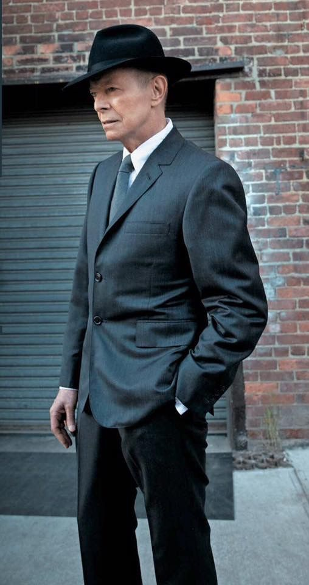

The cliché about David Bowie is that he was a musical chameleon, adapting himself according to fashion and trends. While such a criticism is too glib,
there's no denying that Bowie demonstrated a remarkable skill for perceiving musical movements at his peak in the '70s. After spending several years in the late '60s as a mod and an all-around music-hall entertainer, Bowie reinvented himself
as a hippie singer/songwriter. Prior to his breakthrough in 1972, he recorded a proto-metal record and a pop/rock album, eventually redefining glam rock with his ambiguously sexy Ziggy Stardust persona. Ziggy made Bowie an international star,
but he wasn't content to continue to churn out glitter rock. By the mid-'70s, he'd developed an effete, sophisticated version of Philly soul that he dubbed "plastic soul," which eventually morphed into the eerie avant-pop of 1976's Station
to Station. Shortly afterward, he relocated to Berlin, where he recorded three experimental electronic albums with Brian Eno. At the dawn of the '80s, Bowie was still at the height of his powers, yet following his blockbuster dance-pop album
Let's Dance in 1983, he slowly sank into mediocrity before salvaging his career in the early '90s. Even when he was out of fashion in the '80s and '90s, it was clear that Bowie was one of the most influential musicians in rock, for better
and for worse. Each one of his phases in the '70s sparked a number of subgenres, including punk, new wave, goth rock, the new romantics, and electronica. Few rockers have ever had such lasting impact.